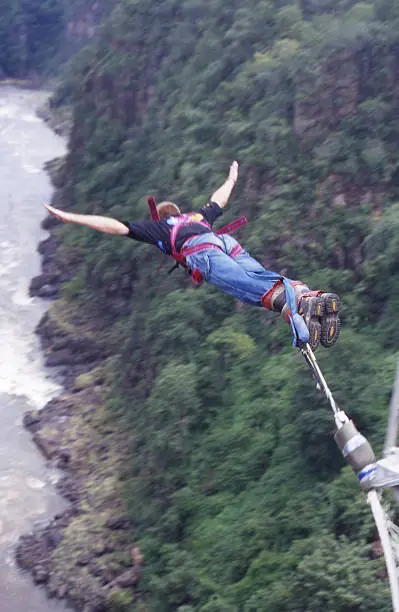
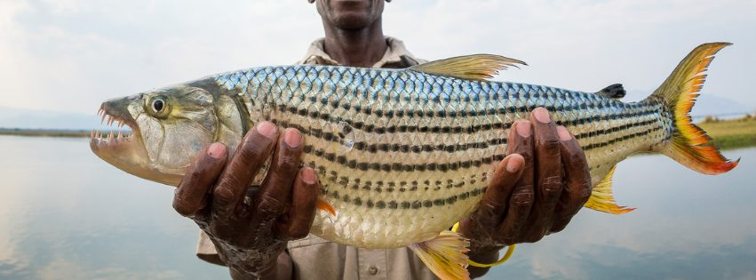

Jornadas selecionadas
Experiências
Safári Big Five
Siga leões, elefantes, rinocerontes, leopardos e búfalos pelas principais reservas do Zimbabwe.

Cruzeiro de vida selvagem no Zambeze
Cruzeiro ao pôr do sol pelo poderoso Zambeze com avistamentos de hipopótamos, crocodilos e elefantes.

Tour de herança e tradições
Mergulhe nas culturas Shona e Ndebele por meio de dança, arte e storytelling.
Tour arqueológico de Great Zimbabwe
Explore o Patrimônio Mundial da UNESCO com guias especialistas revelando séculos de história.

Pacote adrenalina em Victoria Falls
Bungee jumping, rafting em corredeiras e tirolesa na capital africana da aventura.
Expedição de trilha em Chimanimani
Caminhada de vários dias pelas paisagens montanhosas mais dramáticas de Eastern Highlands.

Pesca de tiger fish no Zambeze
Enfrente o lendário tiger fish no Zambeze, a experiência suprema de pesca na Ãfrica.
Pesca e observação de aves no Lago Kariba
Combine pesca de classe mundial com uma espetacular observação de aves no maior lago artificial da Ãfrica.

Jornada africana sob medida
Conte-nos seu sonho. Nós criaremos um itinerário privado e totalmente personalizado só para você.